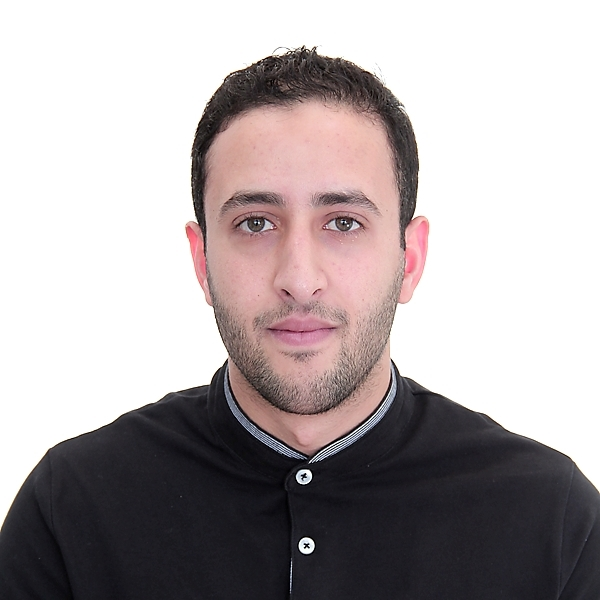

Abdesselam Ferdi
Research Fellow
University of Tartu
Estonia
I am a Research Fellow at the University of Tartu in Estonia, where I work on efficient and interpretable deep learning for clinical and real-world applications.
I am open to postdoctoral and collaborative opportunities.
Selected Research Outputs
View all research outputs →
2026
Lightweight G-YOLOv11: Advancing Efficient Fracture Detection in Pediatric Wrist X-rays
Biomedical Signal Processing and Control
Read paper
2026
Electrostatic Force Regularization for Neural Structured Pruning
Information Sciences
Read paper
2024
Deep Convolutional Neural Networks Structured Pruning via Gravity Regularization
IEEE International Conference on Machine Learning & Applied Network Technologies (ICMLANT)
Read paper